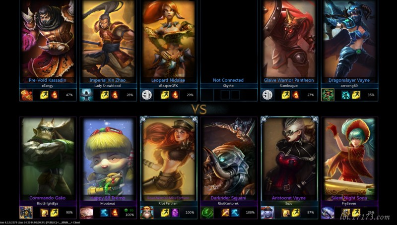
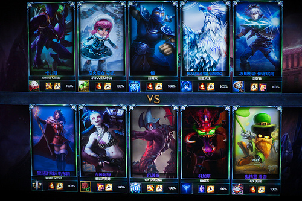
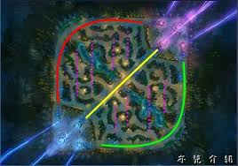
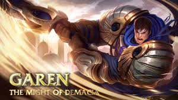
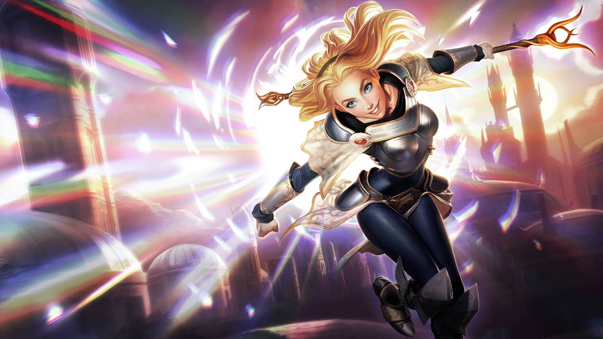
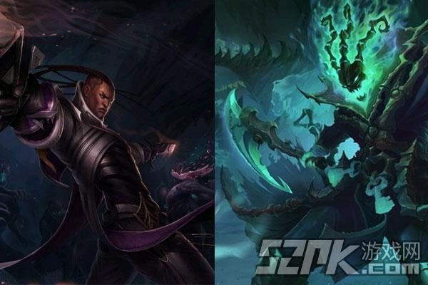

今天要介紹的遊戲是英雄聯盟(LOL),它是一款2.5D.RPG競技類型的遊戲,在遊戲中玩家將操作各式各樣的角色與隊友一起對抗敵人,遊戲方式為擊殺敵方單位取得金錢構築優勢,拆除敵方防禦塔壓迫敵人,並摧毀掉敵方主堡即可獲得勝利


而遊戲中會將地圖分為上.中.下路,並且有一名打野在野區遊走

上路與打野角色多為坦克與鬥士類型,在團隊中擔任承受傷害與切入敵陣的位置,圖為蓋倫

中路角色則偏向魔法傷害類型,在戰鬥中給予敵人大量魔法傷害,圖為拉克斯

下路會出現兩隻英雄,分別是物理輸出與輔助,在團隊後期極為重要
